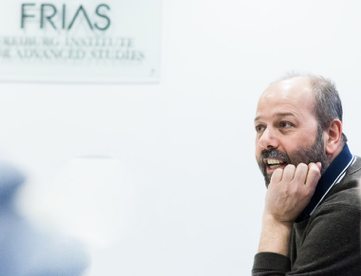

RICCARDO LEONCINI


Other Positions
-
• Permanent Observer in the Scientific Board of the Istituto Gramsci Toscano, Florence.
-
•Research Associate, Research Institute on Sustainable Economic Growth (IRCrES), National Research Council, Milan.
Fields of Interest
Analysis of
technological change and innovation – Local systems
of production – Theory of the firm – Inequality.
Studies
-
•PhD in Economics, Faculty of Economic and Social Studies, University of Manchester.
-
•MA in Economics, Faculty of Economic and Social Studies, University of Manchester.
-
•BA in Political Science (major Economics), Faculty of Political Science, University of Florence.
Conferences
Last
invitations
-
• Summer School, CUPL, Beijing, Jul 4-15, 2022.
• Web Seminar: Dove va l'Europa ai tempi del Coronavirus?, University La Sapienza, Roma, Apr 16 2020.
-
• Il governo dei numeri: indicatori macro-economici e decisione di bilancio nello Stato costituzionale, University of Bologna, Oct 17-18 2019.
-
• New sciences and actions for complex cities, University of Florence, Dec 14-15, 2017.
-
• Migrazioni e cittadinanza, University of Bologna, Ravenna, Oct 20, 2017.
-
• Inequality is good for society. Do you agree?, Debating Europe.
-
• Lunch Lecture Paradigm Shifts in Economics, FRIAS-University of Freiburg, Dec 17, 2015.
Last
conferences
-
•60ª RSA SIE, University of Palermo, Oct 24-26 2019.
-
•GINA Conference, Universidade da Coruña, Sep 26, 2019.
-
•ENEF Workshop, WIFO, Wien, Sep 13-14, 2019.
-
•ENEF Workshop, SPRU, Brighton, Sep 13-14, 2018.
-
•Organiser of the GINA Conference, Bologna, Jun 21-22, 2018.
-
•International Conference on Inequality, Istituto Cattaneo, Bologna, Nov 2-4, 2017.
-
•ENEF Workshop, S.Anna, Pisa, Sep 13-14, 2017.
Forthcoming & Mimeo
-
•Leoncini R. (forthcoming), Economia Politica, in Cavina M., Legnani Annichini A. (a cura di), La scuola giuridica bolognese. La Facoltà e il Dipartimento di Scienze Giuridiche dall'Unità d'Italia al 1988, Il Mulino, Bologna.
-
•Leoncini R., Macaluso M., Polselli A. (2023), Gender Segregation: Analysis across Sectoral-Dominance in the UK Labour Market.
* * *
-
•Guidetti G., Leoncini R., Macaluso M., (2021), Artificial intelligence, robotization and inequality, mimeo.
-
•Argentiero A., Ferrara M., Leoncini R., Pedrini G., Scuderi R. (2021), Does tax evasion affect innovation decisions?, mimeo.
-
•Cefis E., Leoncini R., Marengo L. (2020), Is innovation failure just a dead end?, mimeo.